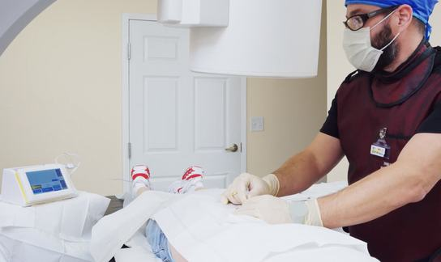

Milestone Scientific develops computer-controlled drug delivery systems for dental and epidural procedures, built on its DPS Dynamic Pressure Sensing Technology®.
$9.0M
FY2025 product sales
~305
Issued U.S. and foreign patents
Dental Solutions
Computer-controlled local anesthetic delivery for dental procedures, using The Wand®, a single-use handpiece.
95M+
Injections to date, STA® and predecessor devices (company-reported)
96%
Of H1 2026 product sales came from the Dental segment
2007
STA® System commercially introduced (early 2007)

Medical Solutions
For Investors
Unaudited results for the six months ended June 30, 2026 vs. 2025. Product sales include ~$0.5M of Q2 international orders not expected to recur.
$5.0M
Product sales, up 9.8%
$1.9M
Net loss, vs. $3.5M
$2.1M
Cash, June 30, 2026
Cash reflects the April 2026 private placement. Going-concern doubt is disclosed in the Form 10-Q. Source: Q2 2026 earnings release, Aug. 14, 2026.
Forward-looking statements and risks: going-concern doubt; NYSE American listing deficiency (deadline Apr. 8, 2027); financing and dilution risk; CompuFlo adoption and reimbursement. See SEC filings.